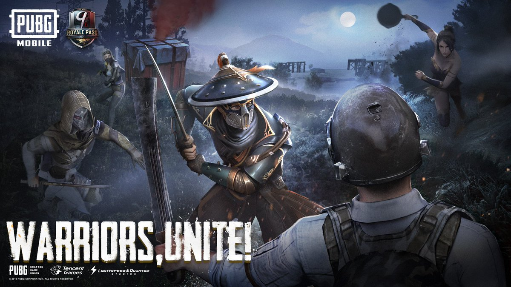
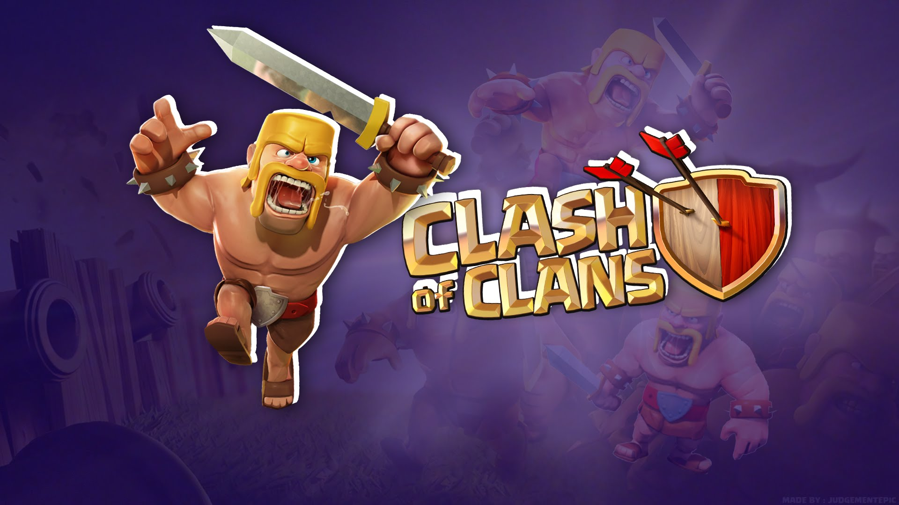
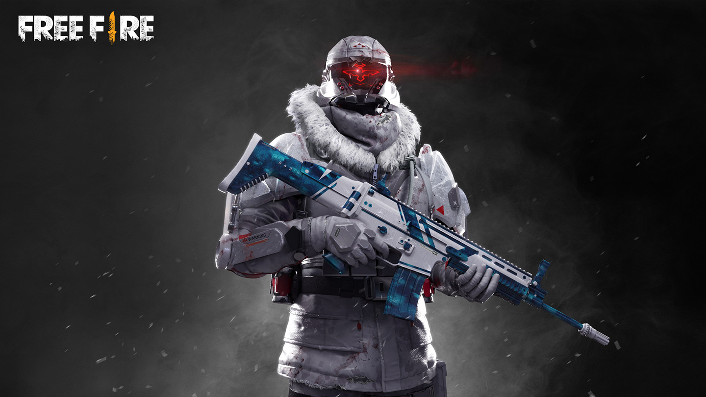

1. Pubg
PlayerUnknown's Battlegrounds (PUBG) is an online multiplayer battle royale game developed and published by PUBG Corporation, a subsidiary of South Korean video game company Bluehole. The game is based on previous mods that were created by Brendan "PlayerUnknown" Greene for other games, inspired by the 2000 Japanese film Battle Royale, and expanded into a standalone game under Greene's creative direction. In the game, up to one hundred players parachute onto an island and scavenge for weapons and equipment to kill others while avoiding getting killed themselves. The available safe area of the game's map decreases in size over time, directing surviving players into tighter areas to force encounters. The last player or team standing wins the round.
2. Clash of Clans
Clash of Clans is a freemium mobile strategy video game developed and published by Finnish game developer Supercell. The game was released for iOS platforms on August 2, 2012, and on Google Play for Android on October 7, 2013. The game is set in a fantasy-themed persistent world where the player is a chief of a village. Clash of Clans tasks players to build their own town using the resources gained from attacking other players through the game's fighting features. The main resources are gold, elixir and dark elixir. Players can conjoin to create clans, groups of up to fifty people who can then participate in Clan Wars together, donate and receive troops, and chat with each other.
3. Free fire
Garena Free Fire (also known as Free Fire Battlegrounds or just Free Fire) is a video game for mobile of the battle royale game genre, developed by 111dots Studio from Vietnam and published by Garena. The game was beta-released in November 20, 2017 and was officially released for Android and iOS on December 4, 2017. As of August 2019, Free Fire has over 450 million registered users. The game consists of up to fifty players falling from a parachute on an island in search of weapons and equipment to kill the other players. Players are free to choose their starting position, take weapons and supplies to extend battle life. Garena Free Fire reaching 7.5 million downloads on Android devices in October 2018 the mark of , becoming one of the most downloaded Android games of 2018, hitting big titles (like PUBG Mobile and Clash Royale). Due to its popularity, the game received the award for "Best Popular Vote Game" by the Google Play Store in 2018, in addition to professional competition creations in certain parts of Brazil and the world.